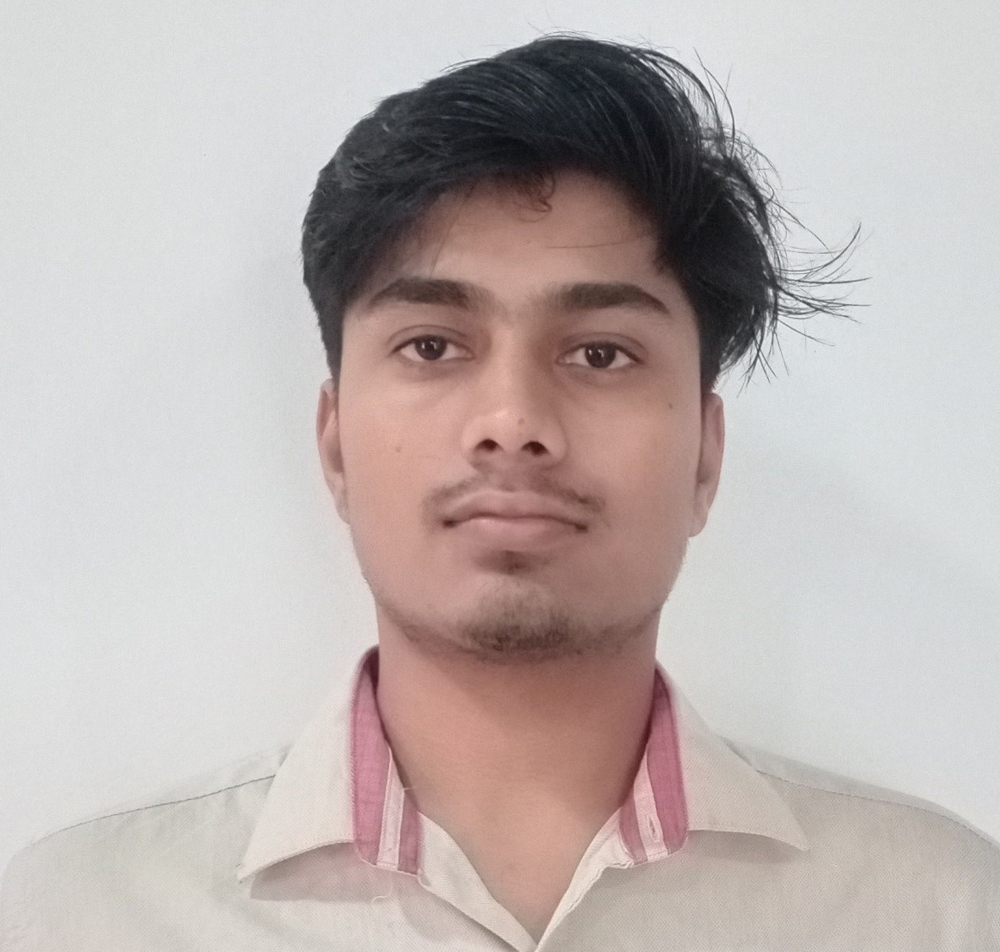

My Resume

Summary
I am an enthusiastic graduate engineer from IIT Roorkee with 1 yr. experience in project management and digital transformation. My area of expertise lies in data visualisation and data analysis. Because of my interest, I want to pursue my career in data analytics. I regularly blog and post my projects on my website called PortWizards.com .
Skills and software
- HTML, CSS, Python, SQL, GitHub, Microsoft platform, Power BI
Education
- Indian Institute of Technology Roorkee 2017-2021 (Distinction)
- HSC 12th ( 82%)
- SSC 10th (92.4%)
Work Experience
- GET in Highways and Bridges| Rodic Consultants Private limited |Jun' 21-Sept’22 | New Delhi
- Assisted the Product Owner in gathering business requirements, bridging between the technical & managerial team and UAT. Learnt about dashboard preparation and process flow mapping for PSA (Project Service Automation) on Microsoft Dynamics.
- Created the budget for FY 22–23 and administered the Highways department's invoice reconciliation. Executed contract management and project monitoring for the Cable stayed sultan Ganj project (859 Cr. Construction Cost) and Atal path Project (43 Cr. Construction Cost) on daily basis.
Internships
- Intern| Rodic Consultants Private Limited| Aug’ 20-Oct’ 20 |New Delhi
- Built flowcharts for the Consultant and Contractor Agreements and the MORTH in draw.io.
- FOSSE Summer Fellowship| FOSSE, IIT Bombay | Apr’20 – Jun’20 |IIT Bombay
- Developed 3d models and centralized the full animation pipeline for the creating the animation movies in short span for the FOSSE. And created the short animation movie of 4 min in the span of 20 days related to covid-19 awareness. (From creating the 3d models to the final delivery)
Projects
- Final Year Project| Planning and design of sustainable solid waste processing and disposal system| Aug’ 20 to Jun’ 21 | Roorkee
- Third year project| Analysis of pedestrian-vehicle interactions using PBQ |Feb’20-Aug’ 20 | Roorkee.
Responsibilities
- Student Mentor| Student Mentorship Program | April’21 | Roorkee
- Executive Member| Thomso’ 19 | oct’19 |Roorkee
Contact Info